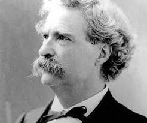

Named in Twain
A few facts about my favorite author:
Samuel Clemens

Primarily a nineteenth-century author, also known by his
pseudonym,
Mark Twain, he has written hundreds of short-stories,
multiple essays, and many novels.
A few random facts
- Born: November 30th, 1835.
- Died: April 21st, 1910.
- Worked as a riverboat pilot, journalist, inventor, and lecturer.
- He is probably most well-known for his work:
The Adventures of Tom Sawyer
A Few of his other works are:
-
A Connecticut Yankee in King Aurthur's Court
-
The Celebrated Jumping Frog of Calaveras County
-
To Raise Poultry
| Name |
Birthplace |
Place of Death |
| Samuel Langhorne Clemens |
Florida, Missouri |
Redding, Connecticut |